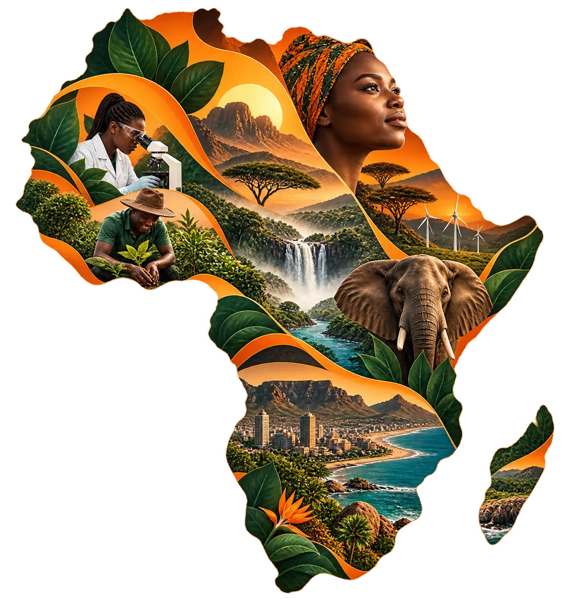

Make climate evidence usable.
Translate credible knowledge into practical tools, stronger institutions and community-rooted action.
 01
01About BTS
We bring climate evidence into conversation with policy, institutions, media and lived experience.
 Locally led · socially inclusive
Locally led · socially inclusiveWho we are
Beyond the Science is a Global South organisation based in Ghana, with projects spanning Africa.
We bridge the research-to-action gap by connecting evidence, policy, creativity, institutions and communities to advance climate resilience and sustainable development.
Our work has extended across Ghana, Nigeria, Tanzania, Uganda, South Africa, Benin and Cameroon. We bring stakeholders together to develop and apply solutions responsive to local realities and wider African priorities.

Across Africa
Explore the countries named in our work. BTS brings research, institutions and communities together across these contexts.
Home to BTS. Our work here connects climate research, policy, youth leadership, media and community practice.
Translate credible knowledge into practical tools, stronger institutions and community-rooted action.
Build with the people who hold local experience, institutional responsibility and the power to sustain change.
Track learning, influence, capability and the decisions that programmes make possible.

Knowledge brokering
Research does not create change by existing. It has to be interpreted, trusted, communicated and connected to an opportunity for action.
BTS works across those transitions—from researchers to policymakers, from programme rooms to national media, and from institutional language to public understanding.
See the workWhat we do
We work with government, academia, the private sector, media, civil society, women’s organisations, youth groups and persons with disabilities. Our programmes make space for multi-stakeholder engagement and co-design so people and institutions can lead responses to local realities.
Learning programmes for youth, journalists, institutions and climate practitioners.
Collaborative tools and labs that connect research with real institutional needs.
Television, radio, digital and creative formats that widen climate understanding.
Technical and operational expertise that translates evidence into practical solutions and supports implementation.
Evidence creates its greatest impact when it moves into policy, institutions, communities and public action. That is where BTS works: connecting knowledge, people and practice to create lasting change.